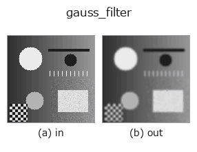

smoothing op• Datenarten: image → image
• Aufruf: fullseye.apply(img, "gauss_filter", a=0.5, b=0.5) (das 2-D-Modell ist ein Bild plus zwei skalare Regler a,b∈[0,1])
• HALCON-Äquivalent: gauss_filter (Bedeutung und Parameter sind in der HALCON-Referenz nachzulesen)

*Die Abbildung ist die tatsächliche Ausgabe auf einer synthetischen 128×128-Eingabe. Links Eingabe, rechts Ausgabe. Punktwolken als Draufsicht-Streudiagramm (Helligkeit = z), 1-D-Reihen als Linie, Volumen als Maximum-Projektion entlang z, Videos als mittleres Bild, komplexe Bilder als Betrag; Rückgabewerte, die kein Bild ergeben, werden als Werte gezeigt.*
Regler a durchfahren (0,1 / 0,5 / 0,9, der andere Regler auf Standard):
▸ gauss_filter: knob a sweep (docs site)
*Regler b ändert die Ausgabe nicht (gemessen: identisch bei 0,1 / 0,5 / 0,9).*
Auf anderen Bildern (synthetische Szene / Foto / Münzen. Obere Reihe: Eingaben, untere Reihe: deren Ausgaben. Regler auf Standard):
▸ gauss_filter: other inputs (docs site)
*Keine Farb-Eingabe (H,W,3) gezeigt: dieser Op behandelt den Farbkanal als dritte Raumachse (vermischt Kanäle). Pro Kanal aufrufen.*
Glättung durch Gauß-Weichzeichnung (`scipy.ndimage.gaussian_filter, Sigma 0.3+2.7*a). Ein Ersatz für HALCONs gauss_filter` (Smooth using discrete Gauss functions.) -- HALCON verwendet einen diskreten Gauß-Kern (Ganzzahlarithmetik), diese Implementierung dagegen einen kontinuierlichen Gauß-Kern via scipy; es ist eine Näherung, aber die Ergebnisse liegen sehr nah beieinander.
> Die ausführliche Beschreibung unten ist der Originaltext — Zusammenfassung und Überschriften sind übersetzt.
`a がシグマを 0.3〜3.0 の範囲で振る。b` は未使用。実装は
`gauss_image` と同一。
• Leitfaden zur Familie gallery2d_smoothing_rank
• Katalog der Beispieldaten (Download-URLs / Lizenzen) — 2-D nutzt skimage.data (BSD/Public Domain) plus synthetische Bilder, 3-D nennt Download-URLs echter Datenquellen (Stanford, PDS, …).
• Herkunft und Literatur der Operatoren — die Quellen der Forschung/Verfahren, auf denen diese Operatorfamilie beruht.
• Der kanonische Algorithmus (Autor, Jahr) und seine Anwendungen stehen im Familienleitfaden oben.
Das Programm unten ist nachweislich lauffähig (gleiche Eingabe wie die Abbildung). In der Studio-Hilfe wird dieser Block zu Schaltflächen, die es sofort laden und ausführen.
gauss_filter 0.35 0.50
▸ Load this pipeline · Load & run
• gallery2d_smoothing_rank — py -3.11 examples/gallery2d_smoothing_rank.py
• poc_cell_counting — py -3.11 examples/poc_cell_counting.py
• poc_document_scan — py -3.11 examples/poc_document_scan.py
• poc_focus_stacking — py -3.11 examples/poc_focus_stacking.py
• poc_gear_tooth_metrology — py -3.11 examples/poc_gear_tooth_metrology.py
• poc_pv_thermal_survey — py -3.11 examples/poc_pv_thermal_survey.py
• poc_sea_ice_concentration — py -3.11 examples/poc_sea_ice_concentration.py
• poc_solar_limb_darkening — py -3.11 examples/poc_solar_limb_darkening.py
• poc_vessel_network — py -3.11 examples/poc_vessel_network.py
• poc_white_balance — py -3.11 examples/poc_white_balance.py
image als Eingabe)identity · gaussian · mean_box · bilateral · unsharp · median · min_filter · max_filter
smoothing)gaussian · mean_box · bilateral · unsharp · sk_tv · sk_wavelet · sk_rolling_ball · sk_nlm
*Provenance: ops.py — 2D Operator-Registry. Diese Notiz wird von tools/opdocs.py md erzeugt (nicht von Hand bearbeiten).*
© 2026 Kazufumi Furuse — Fullseye operator documentation. Licensed under Apache-2.0.
{kind=link}
{kind=link}